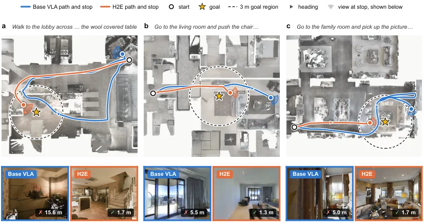

调用 VLA 的智能体能教给 VLA 什么：导航的任务级经验蒸馏
What Can a VLA Learn from the Agent That Calls It? Task-Level Experience Distillation for Embodied Navigation
这篇的洞见是“状态是规划器给的，动作不必”：把智能体走过的状态保留、把运动目标换成“会话实际怎么走”，再掩掉绕路段、补齐停止标签，就能让 VLA 单独复现智能体的能力。数字上 SR 35.0→44.9（+9.9，95% 区间 3.9–16.3），而只用测地专家数据做适配是 0 增益；对打智能体本身（53% SR、423 s、70k token），蒸馏后的 VLA 是 57% SR、114 s、0 token。消融还显示两条规则各值 6 个百分点。
SR on REVERIE-CE val-unseen
Median time per episode
Stop-term contribution
作者、单位与技术谱系 · Research context
作者与单位
研究脉络
- NavGPT 8B VLA方法基座关系：被蒸馏的 VLA 就是论文发布的 8B NavGPT 视频 VLA，读 16 帧历史、一次出 8 个 waypoint，蒸馏只改它的适配器与动作头。[论文 §3.1、§4.1]
- DART / R2R-CE 数据与测地专家上游数据关系：基线的“测地适配”用 DART 噪声的测地专家标签与 R2R-CE 路径跟随数据，H2E 只是在此基础上加入会话数据，混合比例 0.60/0.25/0.15。[论文 §3.4、§4.1]
- 本篇推进：任务级经验蒸馏本篇推进关系：把“智能体会话”这一非标准数据源转成 VLA 监督，并用停止标签与进度掩码解决分布错位。[论文 §3.3、§4.5]
合作网络
- 清华 SIGS 内部共同署名Tsinghua Shenzhen International Graduate School → NavGPT VLA（作为工具被调用）关系：共同署名与技术依赖[论文首页与 §3.1]
- H2E ↔ 智能体规划器（gpt-6-astra）H2E 训练数据 → frontier LLM 规划器关系：技术依赖[论文 §4.1]
单位与通讯信息来自论文首页；NavGPT 与规划器的关系来自正文描述，未推断任何师生或实验室隶属。
方法本质拆解 · What actually changed
是不是微调？
是 LoRA 微调：8B NavGPT VLA 的语言模型线性层加 rank 16、α 32 的适配器，动作头全量训练，视觉编码器冻结；9,000 次更新、每次 16 个样本，4 张 L40 上约 28 小时。没有从零训练任何模块，也没有蒸馏规划器的权重——蒸馏的是数据，不是模型。
有没有额外约束？
约束集中在标签构造：目标一律用会话实际位姿（不由子指令决定）；只保留到达目标的会话；绕路段用 d(p_{t+K}) ≤ d(p_t)+0.25 m 的进度判据掩掉（掩码只作用于损失，历史仍保留）；距离 ≤1 m 的状态一律标零动作，比 3 m 成功区更紧。训练混合比例固定 0.60/0.25/0.15，停止规则对所有数据源统一。
推理/后端到底做了什么？
推理时没有任何后端：LoRA 权重可合并回 W0，蒸馏后的 VLA 与基座同尺寸同步耗，读最近 16 帧观测与指令，一次前向出 8 个 waypoint，执行第一个后重新查询；连续两次输出全零即停止。没有 LLM 调用、没有地图或地点图查询，也不做重规划搜索。
方法本质是什么？
本质是把“智能体的状态访问分布”与“会话的实际运动”分开处理：状态决定在哪学，运动决定学什么，于是绕路不再被当成目标、停止被显式补齐。它没有做的是利用失败会话，也没有把规划器的推理过程蒸馏进来，所以学到的是行为而不是规划能力。
输入智能体成功会话（状态 + 实际运动）与原始任务指令，改变的是训练标签与损失掩码，动作是任务级重标注 + 进度掩码 + 1 m 停止标签后用 LoRA 微调，直接效果是 VLA 单独导航 SR 从 35.0% 升到 44.9% 且不需要 LLM。

桥接价值Bridge
桥接价值
它回答了一个实际部署问题：智能体（LLM 规划器 + VLA 工具）效果好但每个 episode 要花 70k token、423 秒，能不能把这套能力折进一个不需要 LLM 的 VLA。答案是能，而且蒸馏后的 VLA 在自己的成功率上还略高于老师（57% vs 53%），速度快 3.7 倍。对做导航落地的团队，这是“能力保留 + 成本清零”的可行路径。
方法与模块Method
方法摘要
先在训练场景上跑完整智能体（frontier LLM 规划器 gpt-6-astra 调用 8B NavGPT VLA），只保留到达目标的会话，得到 2,395 条会话、57 个场景、332,405 个带标签步骤。然后三条规则转成 VLA 样本：① 任务级标签——不管这一步是谁动的（VLA 原始指令、VLA 子指令还是规划器工具），目标都写成“会话下一步到未来 K 步的实际位姿”，用 Φ_K 表达成机器人系下的 8 个 waypoint；② 进度掩码——只有当未来 K 步内出现接近目标、或 d(p_{t+K}) ≤ d(p_t)+0.25 m 时该步才进损失，绕路段只保留在历史里、不提供目标；③ 停止标签——距离目标 ≤1 m 的所有访问状态都标成零动作。最后把会话数据与 DART 测地专家、R2R-CE 数据按 0.60/0.25/0.15 混合，用 LoRA（rank 16、α=32）加全量动作头训 9,000 次更新。
可迁移模块
第一个可迁移的是“任务级重标注”：把执行轨迹里的每一段运动都挂回原始任务指令，而不是挂回当时收到的子指令，这解决了“智能体数据里有大量子任务标签、不能直接当 VLA 监督”的问题。第二个是停止标签规则：把 1 m 内的所有访问状态都标零，比只在成功终止帧标零更密，配合 L1 损失能让输出精确归零（作者给了中位数论证）。第三个是进度掩码的判据：用未来 K 步的测地距离变化筛掉绕路段，这条规则与具体策略无关，换到我们自己的导航数据清洗也能用。

证据Evidence
关键证据与数字
REVERIE-CE val-unseen 全部 3,189 个 episode：SR 35.0%→44.9%（+9.9，95% 区间 3.9–16.3），OSR 52.0%→50.1%，SPL 26.5→38.4，NE 8.53→6.90 m；同样配方下只用测地专家适配是 34.9%（0 增益），只用 504 条会话也有 43.2%。LoRA rank 16 得 45.6%，rank 64 反而 33.2%（861 个 episode 子集）。与老师对比（100 个 episode、26 个训练外场景、63 条会话蒸馏）：智能体 53% SR / 423 s / 70k token，H2E-VLA 57% SR / 114 s / 0 token，基座 VLA 38% / 196 s。增益分解：相对基座的 +9.9 里停止项 +11.6、到达项 −1.7；相对测地适配的 +9.9 里到达项 +10.4、停止项 −0.4。
边界与下一步Limits & Next Step
边界与风险
作者的方法边界：需要先在训练场景跑得起完整智能体（LLM token 成本在训练期仍要付），且只保留成功会话，失败经验未被利用；智能体依赖 frontier 模型 gpt-6-astra，换模型或降级可能改变会话分布。评测边界：主结果在 REVERIE-CE（MP3D 仿真）上，真实机器人未验证；与智能体的对比只有 100 个 episode、63 条会话蒸馏，样本量小。风险点：LoRA rank 从 16 升到 64 反而掉 12 个百分点，说明这套数据对适配容量敏感，换模型规模时需要重新扫；停止半径 1 m 与成功阈值 3 m 的错位靠“多数停止标签”保证，若目标区域附近样本稀疏，L1 归零的性质不再成立。
下一步实验
第一步在自己的导航数据上复现三条规则的增量：固定同一批智能体会话，分别去掉任务级标签、进度掩码、停止规则，看 SR 掉多少（原文对应 53→47→47→46）。第二步测“失败会话能不能用”：把未成功的会话按进度掩码筛选后加入训练，检查是否引入绕路行为。第三步把停止半径与成功阈值做成二维扫描（1/2/3 m × 3/5 m），确认 1 m 停止规则在其他基准上仍成立，再把方法迁到真实机器人做小样本验证。